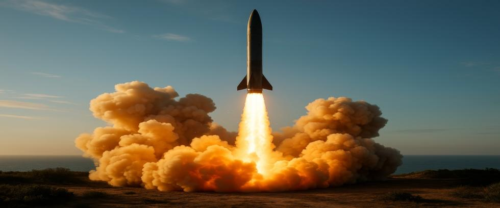

In the decades that followed World War II, global leaders recognized that nuclear weapons were an existential threat to humanity. To prevent the ultimate catastrophe, a series of treaties, agreements, and frameworks were established to manage nuclear arms and reduce tensions between major powers. For a time, it seemed like those efforts might work. But today, the world is witnessing a troubling shift—one where old tensions are surfacing anew, and safeguards that once maintained a fragile peace are weakening.
Understanding how the world moved from treaties to tensions is crucial for recognizing the growing risks we face today and how easily safeguards can vanish.
The Rise of Arms Control Agreements
In the aftermath of Hiroshima and Nagasaki, world leaders sought ways to prevent a future nuclear war. Early efforts, such as the 1946 Baruch Plan, failed to gain traction. However, efforts to limit nuclear arsenals continued.
The Limited Test Ban Treaty of 1963, which prohibited nuclear tests in the atmosphere, underwater, and in space, marked the first major success. This was followed by the landmark Treaty on the Non-Proliferation of Nuclear Weapons (NPT), which entered into force in 1970. Under the NPT, nuclear-armed states agreed to nuclear disarmament, while non-nuclear states agreed to refrain from developing nuclear weapons in exchange for access to nuclear power technology.
Other major agreements followed, including:
- SALT I and II (Strategic Arms Limitation Talks)
- The Anti-Ballistic Missile (ABM) Treaty
- The Intermediate-Range Nuclear Forces (INF) Treaty
- The Strategic Arms Reduction Treaty (START)
Those treaties acknowledged a growing recognition that mutual survival depends on reducing, rather than escalating, nuclear competition.
Deterrence and Diplomacy in a Bipolar World
During the Cold War, nuclear deterrence was underpinned by the concept of Mutually Assured Destruction (MAD). This proposed that attacking another nuclear power with nuclear weapons would guarantee the annihilation of both countries. This grim logic, although frightening, created a fragile stability between the United States and the Soviet Union.
Diplomatic channels remained open, even during periods of extreme tension like the Cuban Missile Crisis. The Red Telephone—a direct communication link between Washington and Moscow—was established to address misunderstandings that might trigger a nuclear war.
Arms control agreements added more stability. They provided fresh opportunities for dialogue, while verification measures offered mutual reassurance that both sides were acting in good faith despite their differences.
Post-Cold War Optimism—and Its Limitations
The collapse of the Soviet Union in 1991 created a moment of optimism. The START I and START II treaties also came into effect, leading to significant reductions in nuclear stockpiles. Former Soviet republics such as Ukraine, Kazakhstan, and Belarus agreed to return Soviet nuclear weapons stationed on their soil.
Before long, new agreements were reached, including the Comprehensive Nuclear-Test-Ban Treaty (CTBT), which unfortunately never entered into force due to incomplete ratification. However, the United States, the Soviet Union, and England signed the Limited Test Ban Treaty in 1963, prohibiting nuclear testing in the atmosphere, underwater, and in outer space.
But despite those successes, new challenges emerged. Proliferation concerns grew when India and Pakistan became nuclear weapons states, as did North Korea in 2006. Meanwhile, modernization programs by existing nuclear powers suggested that the goal of nuclear disarmament was slipping away.
Erosion of Treaties and Renewed Tensions
In the 21st century, the framework to limit nuclear weapons development is showing signs of collapse.
The United States' withdrawal from the ABM Treaty in 2002 marked a major turning point, as did the termination of the INF Treaty in 2019. The New START treaty between America and Russia, the last remaining nuclear arms control agreement in the world, is currently suspended over Russian concerns about US involvement in the Ukraine war. But perhaps more concerning is the complete expiration of New START in February 2026, assuming a new agreement is not reached soon.
Other developments are worrisome as well:
- Emerging technologies such as hypersonic missiles, cyber warfare, and space-based weapons systems introduce new uncertainties into strategic calculations.
- The growing rivalry between major powers—particularly the United States, Russia, and China—risks escalating regional conflicts into broader confrontations.
- Breakdowns in communication and trust, due to disinformation, rising nationalism, and competition for resources, further undermine nuclear stability.
Rather than building on past success, the world is regressing back toward a bygone era when nuclear arms races superseded nuclear arms control.
Why This Matters
The shift from treaties to tensions is not merely an academic concern—it directly impacts the immediate security of every person on Earth. The mechanisms that once managed nuclear risks have eroded, while nuclear weapons technology is spreading faster than ever before.
History shows that treaties alone do not guarantee peace. Lasting stability requires political will, nurturing trust, and effective vigilance to be effective. Without renewed efforts to strengthen arms control and work toward nuclear disarmament, the dangers posed by nuclear weapons will continue to grow.
At the Our Planet Project Foundation, we believe that understanding these dynamics is critical to our survival. The arms control story is one of humanity's efforts to prevent the worst from happening. But as international tensions grow, it is essential to remember that treaties, dialogue, and diplomacy have saved the world before—and could save it again if we choose to prioritize them.